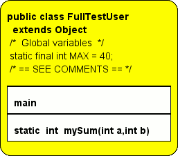
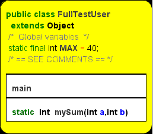
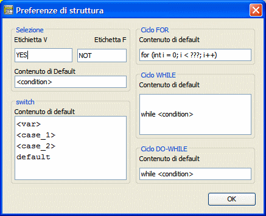
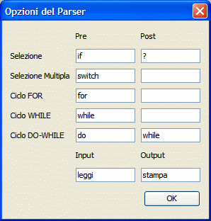
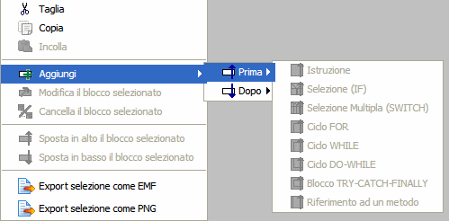

JStruct user interface
The toolbar can be freely positioned on the window edges or separate from it. Typically all toolbar buttons duplicates the functionality of the standard menu.
Clicking in the following figure you get the corresponding help:

The following features are only present in the Toolbar and not in the menu:
-

-
Zoom+: Enlarges the character and then the image.
-
-
Zoom-: shrinks the character and then the image.
-

-
10 color palettes: Color the selected item
standard menu
-
File
-
modification
-
Diagram
-
New Method: Creates a new method. It can only be used if it is selected a Class
-
New Class: Create a new Class. It can only be used if no block or a class is selected
-
add
-
Before: Inserts a block before the selected item, using the following list:

-
After: Inserts a block after the selected item, using the following list:

-
Edit: Opens a pop-up for the editing of code and comments for the selected item. The same operation can be done with the mouse, double clicking on a block or a class or a method expanded; also double click on the background allows you to edit the program data (package, import and not javadoc initial comment):

-
Delete: Delete the selected block. The same operation can be done with the Delete key: [Delete]
-
Move Up: Moves the selected item up one position.
-
Move Down: Moves the selected item down one position.
-
To Expand / Collapse: Expand and reduces Classes and methods selected to hide the parts not of interest. Even a double click of the mouse expands a class or a reduced method.

|

|

|
Reduced class
Reduced
methods |
Expanded class
Reduced
methods |
Expanded class
Expanded
methods |
-
Show Comments: Enable the automatic display of comments when the mouse is over a block. The blocks with comments are highlighted with a gray border on the left.

-
Highlight variables: Enable syntax highlighting of code:

-
Analyze Structogram: Enables the test of the most frequent errors in java code.
-
options
-
Characters: Allows you to choose afont and size (we recommend the monospace font characters):

The symbols in test are used by JSruct.
-
Color: allows you to choose the palette of 10 colors of the Toolbar to be used to highlight the blocks. Click a color in the pop-up to change it:

-
Structures: Allows with a pop-up to change the default content of the new elements:

-
Parser: Allows you to define words (optional) that will be ignored by the parser. Useful for 'localize' structures ( "se" rather than "if", etc ...):

-
Analyser: Allows you to select which advertisements to show in mode 'Analyze Structogram'.
-
Language: For the user interface and help.
-
Appearance: Choice between different look and feel
-
Java coding: Used to Import / export of Java code, allows the proper management of special characters in various situations.
-
Save all settings: Saves default options rewriting jstruct.ini file
Note: The jstruct.ini configuration file is in the same directory as
the code, then JStruct is 'portable' project: for example, can be used
from a USB stick .
-
Help
-
User Help: This help is displayed in a pop-up
-
About: Information about the program and credits
Mouse
-
Click SX
-
Select the block
-
Left click + drag
-
Move the selected block under another block. During dragging, red means not eligible destination, green allowed desitnation.
-
Click DX
-
Activates a context menu

-
double Click
-
-
Expands , if the class or method are reduced.
-
Edit, for all blocks and for classes or methods if they are expanded.
- Edit global data , if carried out on the gray background.
Help |
GUI |
Blocks |
Export |
Import